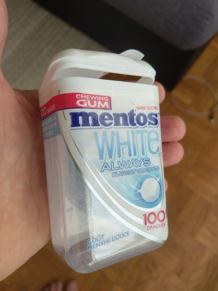
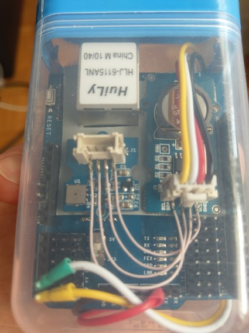
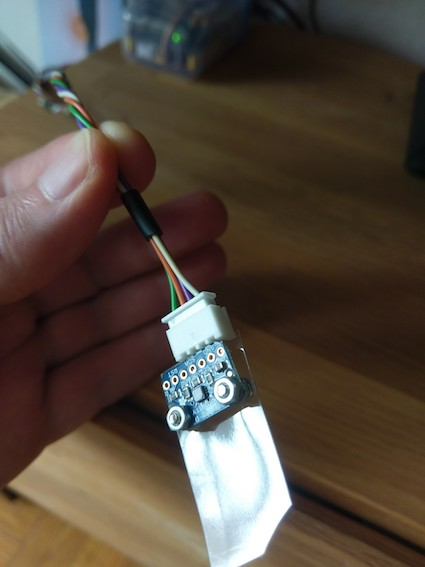
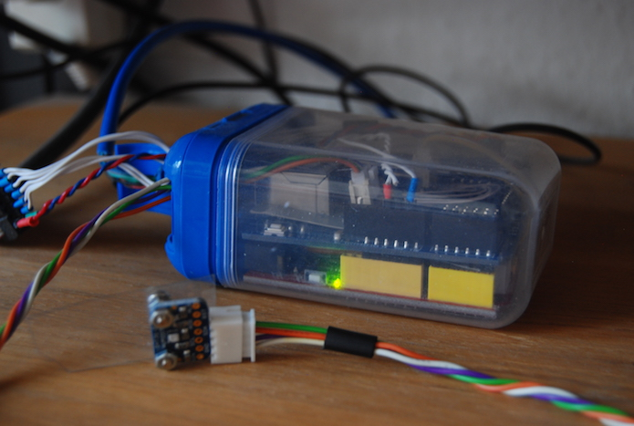
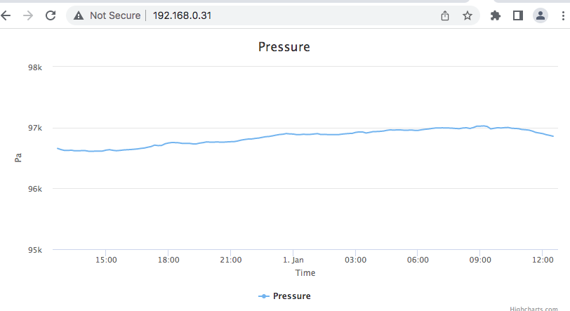
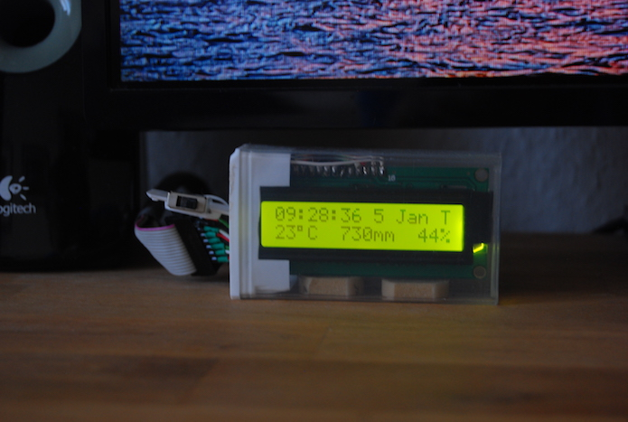
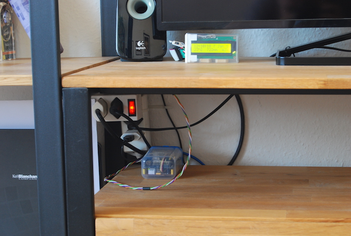

Weather station
Old Mentos box fits perfectly a stack of two Uno-sized Arduino development boards:

Arduino (not seen) together with a standard Ethernet Shield, DS1307 RCT, and barometer sensor:

Humidity and temperature Adafruit SHT31 sensor has to be put outside of the box:

Together it looks as follows::

With a bit of sketchy code historical pressure graph is rendered online:

An external display (also fits well in TicTac box) shows current readings and time:

Overal arrangement:
:
